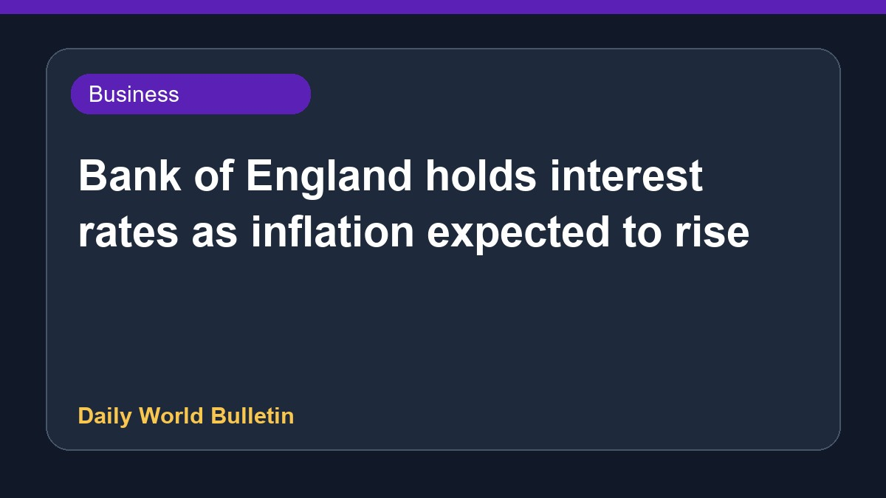

Bank of England holds interest rates as inflation expected to rise

The Bank of England has decided to keep interest rates steady. Officials stated that inflation is projected to increase in the coming period. At the same time, the central bank anticipates stronger economic growth for the year than earlier predictions suggested. However, policymakers noted that ongoing uncertainties persist, driven largely by the conflict involving Iran. Further details regarding these economic forecasts and the future path of monetary policy remain limited based on the current available reports.
Original source: BBC Business
Interest rates held as Bank of England says inflation set to rise ↗
Interest rates held as Bank of England says inflation set to rise ↗